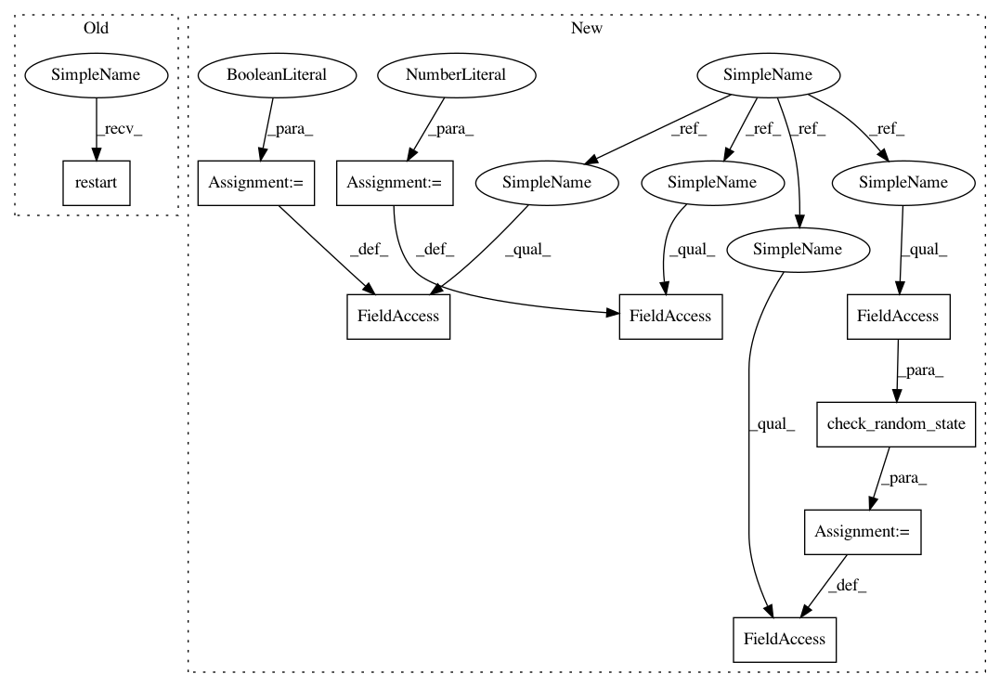

554e2dda6e15976d6b9d4657b2eeff323636514b,src/skmultiflow/data/generators/stagger_generator.py,STAGGERGenerator,prepare_for_use,#STAGGERGenerator#,169
Before Change
return self.current_sample_x, self.current_sample_y
def prepare_for_use(self):
self.restart()
def is_restartable(self):
return True
After Change
else:
raise ValueError("balance_classes should be boolean")
def prepare_for_use(self):
self.sample_random = check_random_state(self._original_random_state)
self.next_class_should_be_zero = False
self.sample_idx = 0
def next_sample(self, batch_size=1):
next_sample
In pattern: SUPERPATTERN
Frequency: 4
Non-data size: 9
Instances
Project Name: scikit-multiflow/scikit-multiflow
Commit Name: 554e2dda6e15976d6b9d4657b2eeff323636514b
Time: 2018-05-23
Author: bader.d24@gmail.com
File Name: src/skmultiflow/data/generators/stagger_generator.py
Class Name: STAGGERGenerator
Method Name: prepare_for_use
Project Name: scikit-multiflow/scikit-multiflow
Commit Name: 554e2dda6e15976d6b9d4657b2eeff323636514b
Time: 2018-05-23
Author: bader.d24@gmail.com
File Name: src/skmultiflow/data/generators/agrawal_generator.py
Class Name: AGRAWALGenerator
Method Name: prepare_for_use
Project Name: scikit-multiflow/scikit-multiflow
Commit Name: 554e2dda6e15976d6b9d4657b2eeff323636514b
Time: 2018-05-23
Author: bader.d24@gmail.com
File Name: src/skmultiflow/data/generators/sea_generator.py
Class Name: SEAGenerator
Method Name: prepare_for_use
Project Name: scikit-multiflow/scikit-multiflow
Commit Name: 554e2dda6e15976d6b9d4657b2eeff323636514b
Time: 2018-05-23
Author: bader.d24@gmail.com
File Name: src/skmultiflow/data/generators/sine_generator.py
Class Name: SineGenerator
Method Name: prepare_for_use